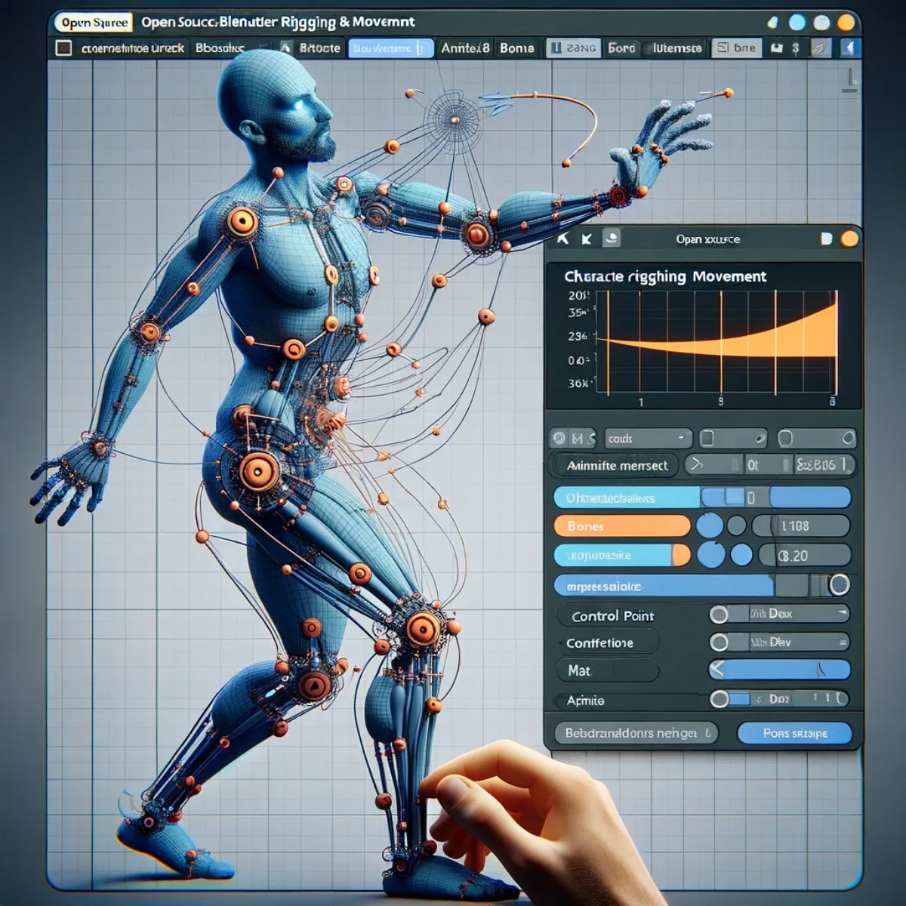
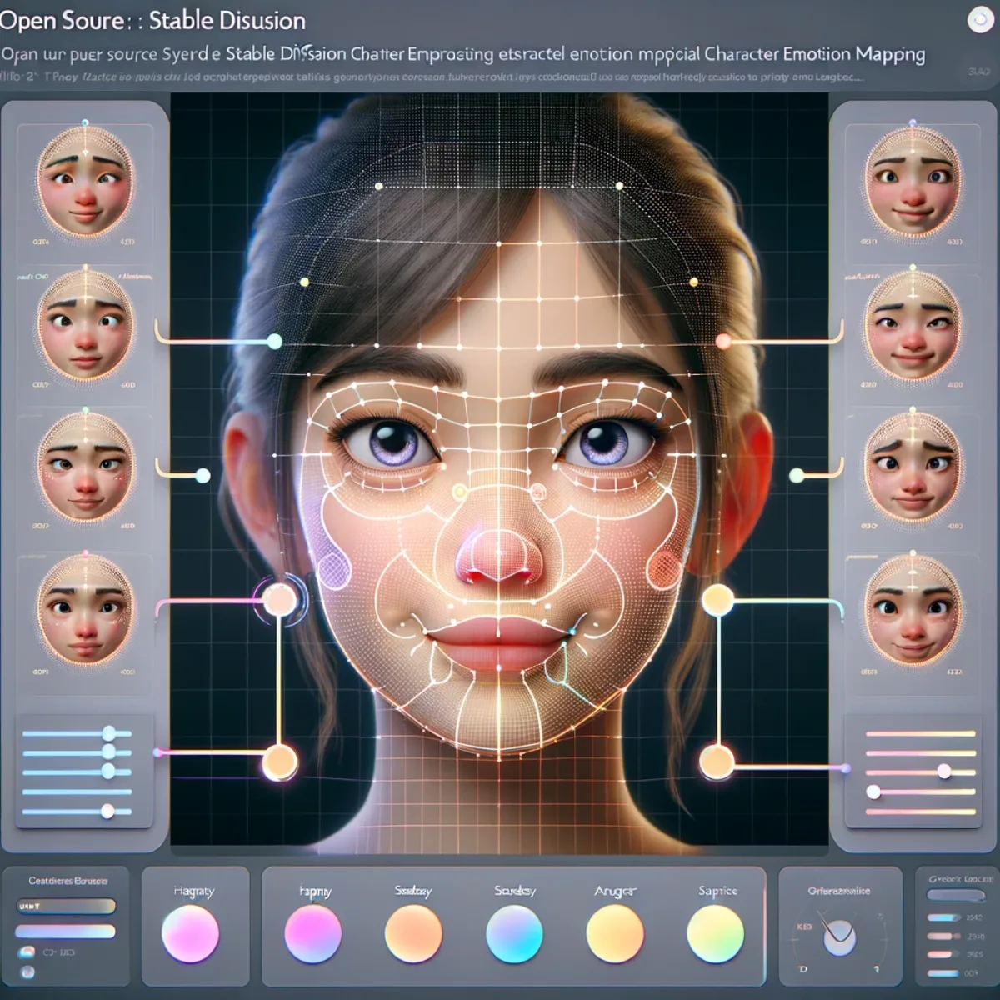
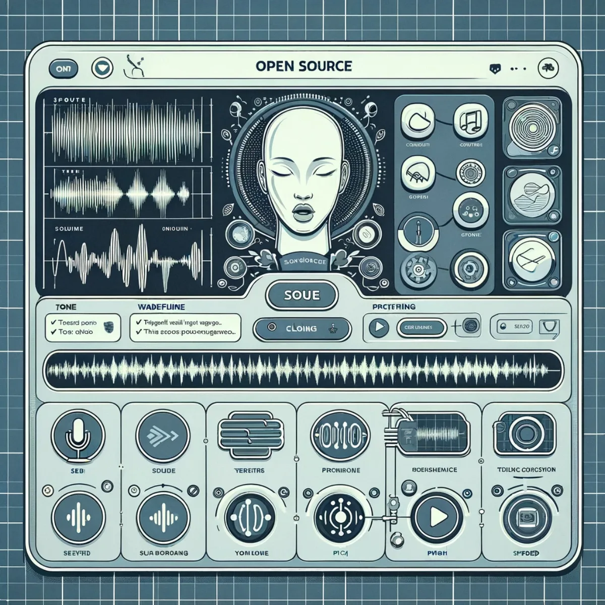

Pathways / Mind & self
Avatar Builder
Your digital twin, built by you and owned by you. An open-source pipeline, five stages deep: body, clothing, rigging and movement, emotion mapping, and a cloned voice to speak with. No rented avatar locked inside someone else's platform; this one is yours to keep and to change as you grow.
Open source: Stable Diffusion
Digital twin body creation
You build your digital twin body here, using open-source Stable Diffusion rather than a closed platform you'd pay rent to forever. Shape a 3D likeness that mirrors your own physicality, line by line and node by node, until it genuinely looks like you. Because the pipeline is open, the result belongs to you: something you can keep, refine and carry with you.
Open source: Stable Diffusion
Digital twin clothing creation
Dress your digital twin in clothing you make yourself, again with open-source Stable Diffusion. Choose from an endless wardrobe of textures, colours and styles, or design garments no one else has, tailored to exactly who you are. Your wardrobe grows and shifts as you do, and every piece of it stays yours.

Open source: Blender & Unity
Character rigging & movement
Rig your avatar for movement with Blender and Unity, both open source. You're the director and the puppeteer here, syncing each joint and bone into fluid, lifelike animation. Build the movement once and it's yours to reuse however you like, across every story you want to tell with your own digital cast.

Open source: Stable Diffusion
Character emotion mapping
Map emotion onto your twin's face with open-source Stable Diffusion. Sculpt smiles, shape frowns, and choreograph the small, subtle signals that make a face feel human. Each slider is under your hand, so the way your twin expresses itself is a decision you make, not a preset handed to you.

Open source: text to speech
Voice cloning
Give your twin a voice with open-source text-to-speech cloning. Turn your written words into speech in a voice tuned to sound like you, syllable by syllable. Your voice print is sensitive, so it matters that this is open and yours: no big-tech vault holding a copy of you, just a digital echo you own and control.
Keep exploring